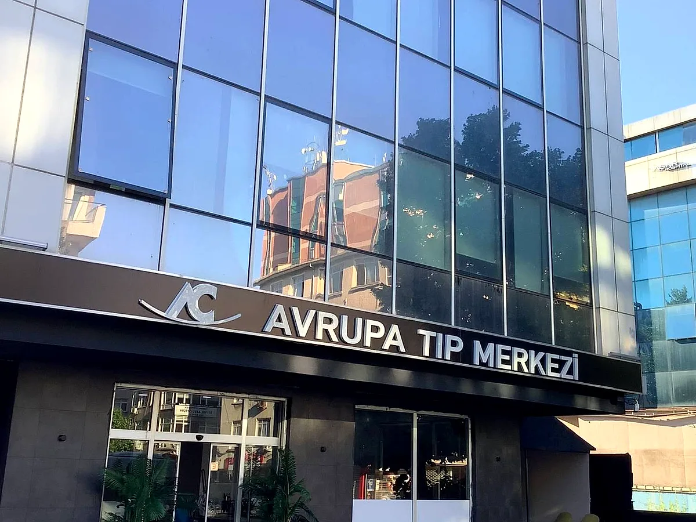

Hakkımızda
1998'den bu yana Bakırköy'de, aynı binada büyüyerek hizmet veriyoruz. Amacımız ilk günden beri aynı: semt sakinlerinin nitelikli sağlık hizmetine, beklemeden ve şehrin öbür ucuna gitmeden ulaşabilmesi.
Semt ölçeğinde, hastane ciddiyetinde
Özel Avrupa Tıp Merkezi, 1998 yılında Zuhuratbaba'da iki katlı bir poliklinik olarak kuruldu. Bugün 14 tıbbi birimi, 26 uzman hekimi, merkez laboratuvarı ve görüntüleme altyapısıyla, yılda on binlerce hastaya hizmet veren bir sağlık kuruluşuna dönüştü.
Büyürken vazgeçmediğimiz ilke, tıp merkezi ölçeğinin en değerli avantajı olan kişisel ilgi: hekiminizin sizi tanıması, kayıtlarınızın tek merkezde tutulması ve her ziyaretinizde aynı ekiple karşılaşmanız. Muayene, tahlil ve görüntülemeyi aynı binada, çoğu zaman aynı gün içinde tamamlıyoruz.

27 yılın birikimi
Kuruluşumuzdan bugüne, kayıtlarımıza dayanan tablo.
yıllık kesintisiz hizmet
uzman hekim, 60+ sağlık çalışanı
tıbbi birim, aynı çatı altında
Bizi biz yapan üç ilke
Güven ve şeffaflık
Hangi tetkikin neden istendiğini açıklarız; gereksiz işlem yapmayız. Hekim kadromuzun eğitim geçmişi sitemizde açıkça yer alır.
Zamanınıza saygı
Randevu saatlerine sadakat, aynı gün tahlil sonucu ve tek ziyarette tamamlanan işlem akışı önceliğimizdir.
Semtin parçası olmak
Üç kuşaktır aynı aileleri takip ediyoruz. Hastalarımızın çoğu bize yürüyerek ulaşır; biz de bu yakınlığın sorumluluğuyla çalışırız.
Bizi yakından tanıyın
Merkezimizi ziyaret edin veya telefonla bilgi alın; size uygun hekim ve saati birlikte belirleyelim.